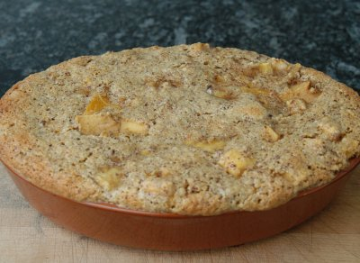

| Zutaten für 4 Personen: | |
| 4 | Reife Bananen |
| 1 | Apfel |
| 1 | Orange |
| 3 | Eier |
| 50 g | Zucker |
| 2 TL | Rum |
| 100 g | gemahlene Haselnüsse |
(Auflaufform 2 l Inhalt). Form nicht befetten.
Ofen auf Mittelhitze (180°C) vorheizen.
Bananen schälen. 2 Bananen mit einer Gabel in eine Schüssel zerdrücken, die anderen 2 Bananen der Länge nach halbieren und in 1 cm dicke Stücke schneiden und in die Schüssel geben.
Apfel schälen, vom Kerngehäuse befreien und in 1 cm grosse Würfelchen schneiden. In die Schüssel geben.
Orange gut waschen, Schale abreiben, Fruchtfleisch in hautlose Schnitze schneiden.
Eier teilen. Eigelb mit dem Zucker und dem Rum in einer anderen Schüssel schaumig rühren.
Früchte und Nüsse dazugeben.
Eiweiss zu Schnee schlagen und sorgfältig unter die Masse ziehen. Masse in die Form füllen und 50 - 60 Minuten backen.
Sofort servieren.
Herbert Eigenmann, Code: BAS
Schmeckte ganz OK. RE, 2.6.2008
@LINKBACK_TAG@ @WAKELOCK@